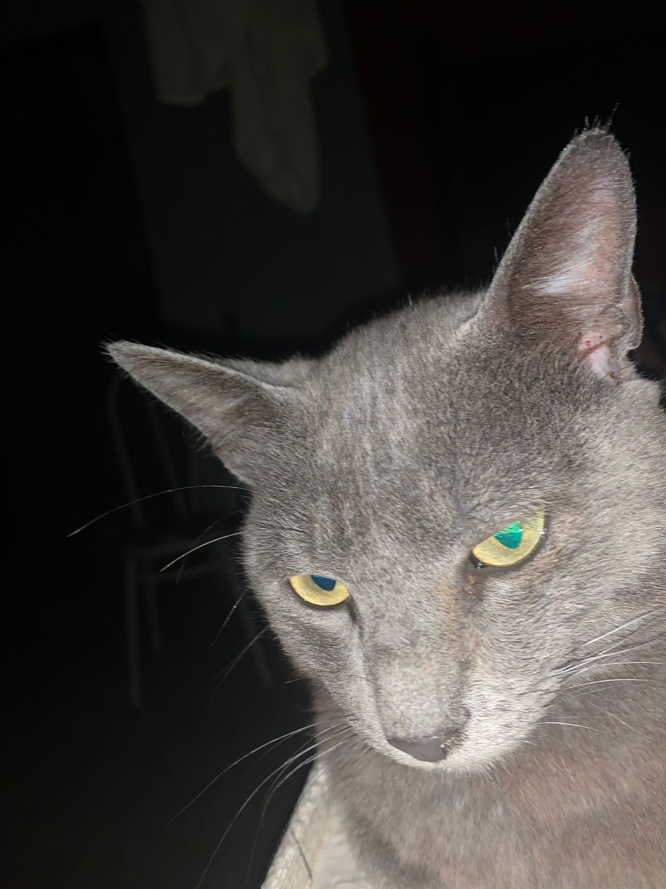
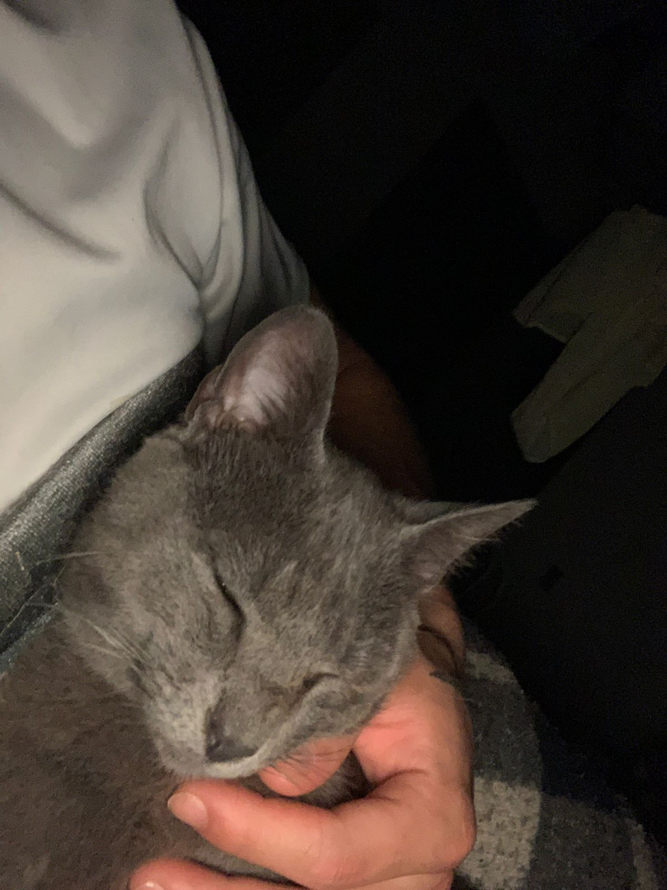
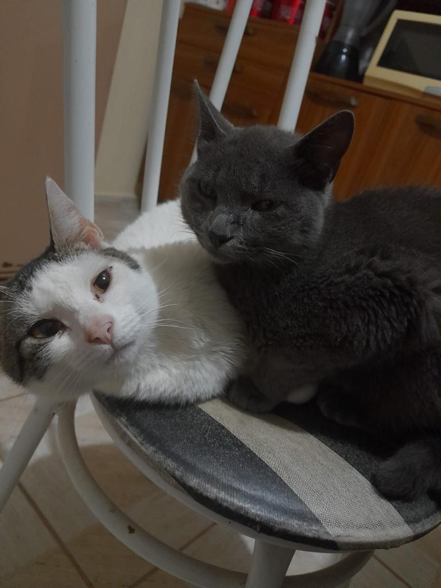
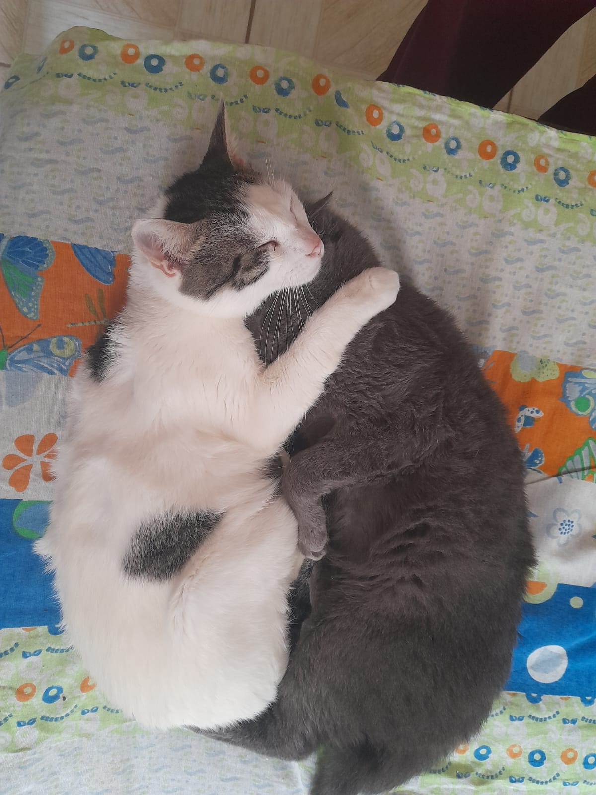

Sua História...
Encontramos um gatinho perdido em Santa clara, Embu das Artes. era inverno e estava muito frio, esse gatinho miava muito, o coitado estava tremendo. Eu e a nayeli pegamos ele e levamos para casa, demos comida, água... e ele se acostumou com agente!
Esse gatinho era muito carinhoso, ele gostava de esfregar a cara na nossa quando estavamos dormindo só pra pedir carinho... o miado dele era engraçado, e ele tinha um rabinho todo torto, muito engraçado.
Ele tinha um companheiro que sempre dormiam juntos, que é o soneca, como o próprio nome já diz, esse gato só dorme. eles viviam juntos.
Infelizmente, nosso céu ganhou mais uma estrelinha, pois nosso querido gatinho faleceu por uma doença que não conhecemos...(ele não comia e nem bebia água) ficou muito fraco. e morreu nos braços da minha namorada nayeli. ele faleceu no dia 15/11/2022.
